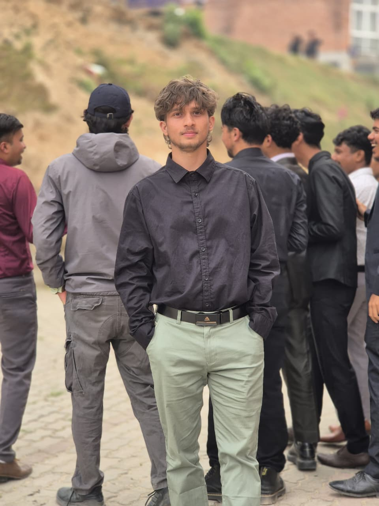
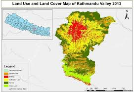
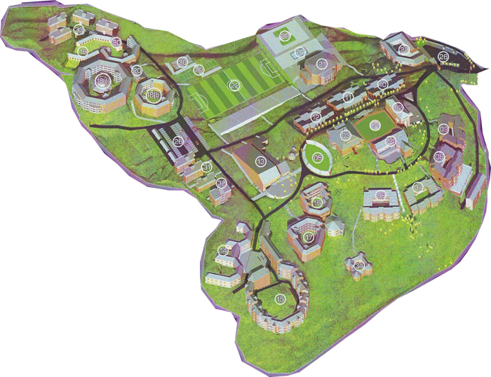
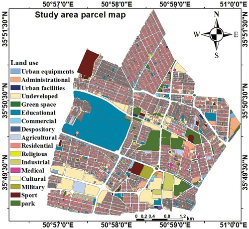
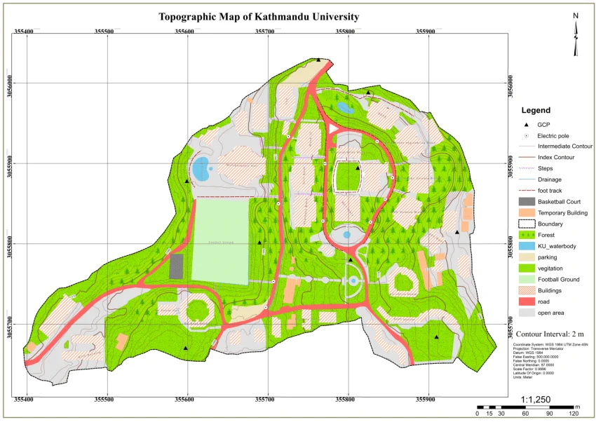

Featured Work

Mapping the Environment with Engineering Solutions.
Welcome to my portfolio! I specialize in geomatics engineering and spatial analysis, turning raw geographic data into
actionable insights.My project work covers the full spectrum of geospatial technologies, including:
Remote Sensing & Earth Observation (Google Earth Engine, Landsat)
Precision Surveying & Topographic Mapping (DGPS, AutoCAD Civil 3D)
Spatial Database Architecture (PostgreSQL, PostGIS)
GIS & Hydrological Analysis (ArcGIS Pro, SRTM DEMs)
UAV Photogrammetry (Agisoft Metashape, Orthophoto generation)
Explore the case studies below to see how I apply spatial SQL, photogrammetry, and terrain analysis to projects across the Kathmandu Valley and beyond.

LULC Change Detection — Kathmandu Valley
Multi-temporal Land Use / Land Cover change analysis of the Kathmandu Valley from 2010 to 2024 using Landsat 8 OLI/TIRS imagery. Supervised Maximum Likelihood Classification via Google Earth Engine. Overall accuracy 87.4%, Kappa coefficient 0.82. Reveals rapid urban expansion at the expense of agricultural land.

GPS Field Survey & Topographic Mapping — KU Campus
Conducted a differential GPS survey and total-station traverse across the Kathmandu University campus area. Produced a 1:1,000 scale topographic map with 0.5 m contour intervals and computed land parcel areas using coordinate geometry. Map output delivered in both AutoCAD DWG and GeoTIFF formats.

Spatial Database Design — Urban Land Parcels
Designed a fully relational spatial database schema for urban land parcels using PostgreSQL with PostGIS extension. Implemented complex spatial SQL queries including ST_Intersection, ST_Buffer, ST_Area, and ST_Within. Results visualised in QGIS via DB Manager plugin with dynamic symbology.

DEM-Based Terrain & Hydrological Analysis
Used SRTM 30 m Digital Elevation Model data to derive slope, aspect, hillshade and watershed boundaries for the Bagmati River basin. Performed flow accumulation and stream network extraction using ArcGIS Pro Spatial Analyst. Outputs used for flood-risk zone delineation mapping.

Drone-Based Orthophoto & Point Cloud Production
Planned and executed a UAV photogrammetric survey flight over the KU campus. Processed imagery in Agisoft Metashape to generate a high-resolution orthophoto (GSD 3 cm), dense point cloud, and 3D mesh. Ground control points surveyed with DGPS for geometric accuracy assessment.